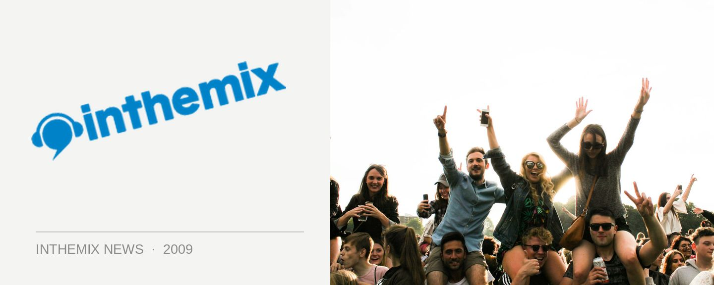

Freedom Festival pulls together a smoking trance lineup
Rank 1, Agnelli & Nelson, Scot Project and Wippenberg. All four acts will be on deck in the trance arena when Freedom Festival returns to Sydney in early November, with the mainstage house lineup and venue details to follow shortly for an event that promises to be full of spectacle and surprise.
It’s a smoking lineup of quality trance acts indeed, with Rank 1 setting the framework for the Dutch trance sound way back in ‘99 with Airwave but continuing to innovate over the years, working with Armin van Buuren and producing this year’s stunning Trance Energy anthem L.E.D There Be Light. Agnelli & Nelson are another enduing duo who’ve managed to stay consistent over the years, dominating 2007 in particular with their remix of Big Sky.
Joining them in the trance arena will be hard dance veteran Scot Project as well as Wippenberg, a German DJ/producer who’s on the very cutting edge of the new wave of trance/techno/electro/house fusions.
The theme for this year’s Freedom Festival will be ‘Theme Park’, and once again it’ll be shooting for a spectacular fusion of music and entertainment. It’ll feature dancers, performers, pyrotechnics, fireworks, all manner of special effects, and a host of other surprises to be revealed on the night.
Freedom Festival returns to Sydney on Saturday November 7th, stay tuned to ITM for venue and the mainstage lineup shortly. Check out ITM’s Festival Page for more info, and the trailer below…